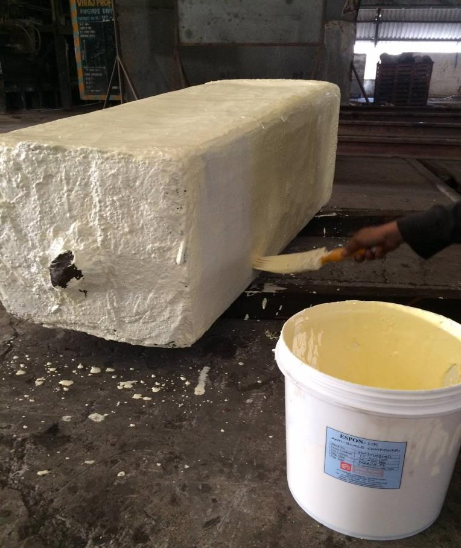
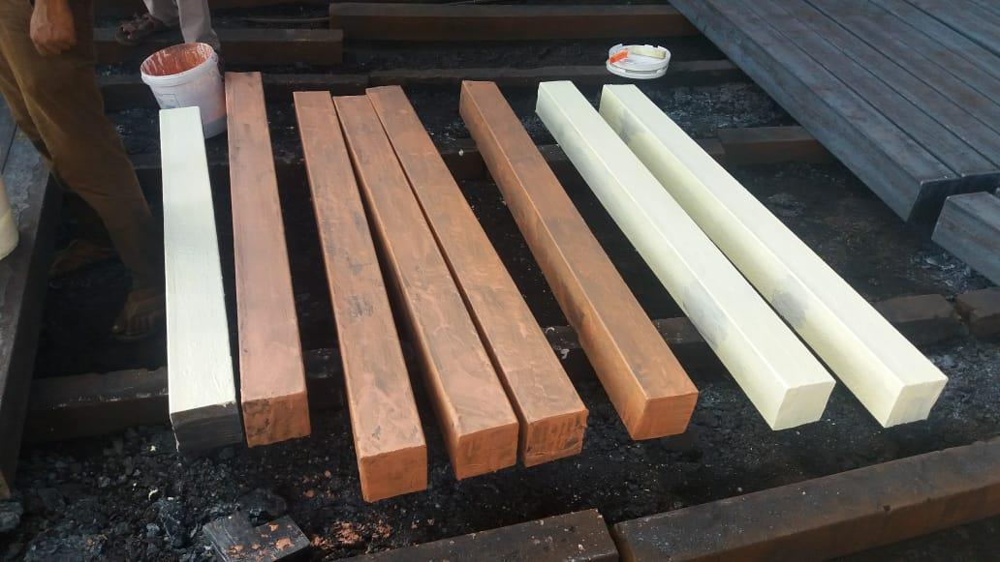
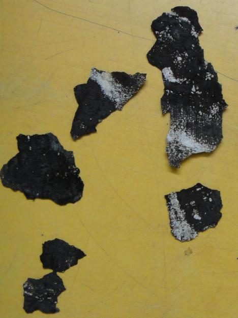
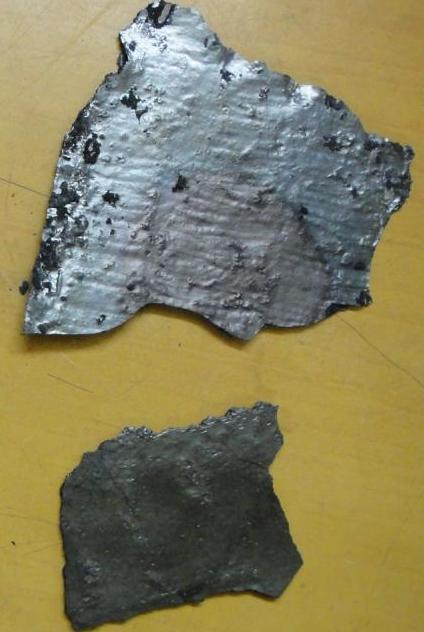
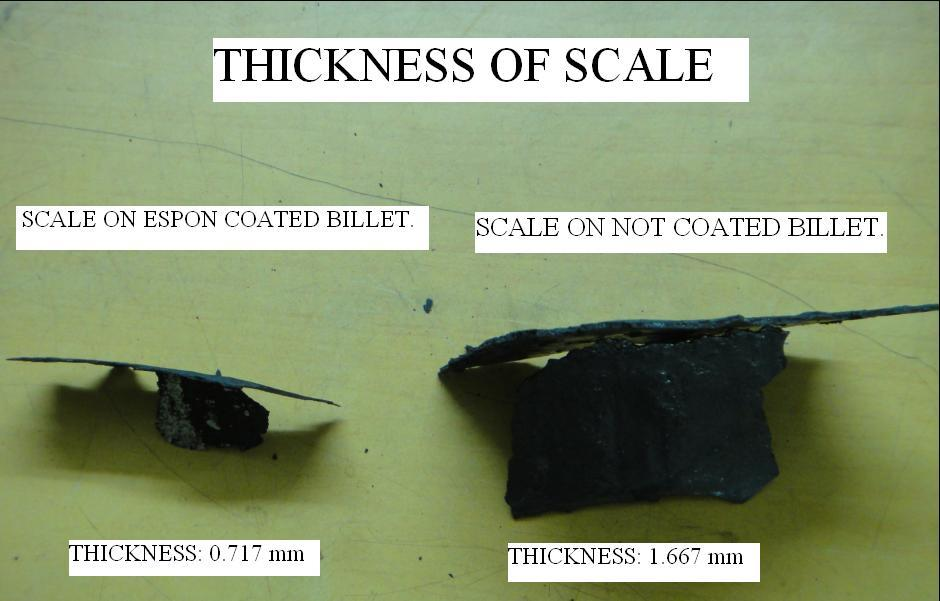
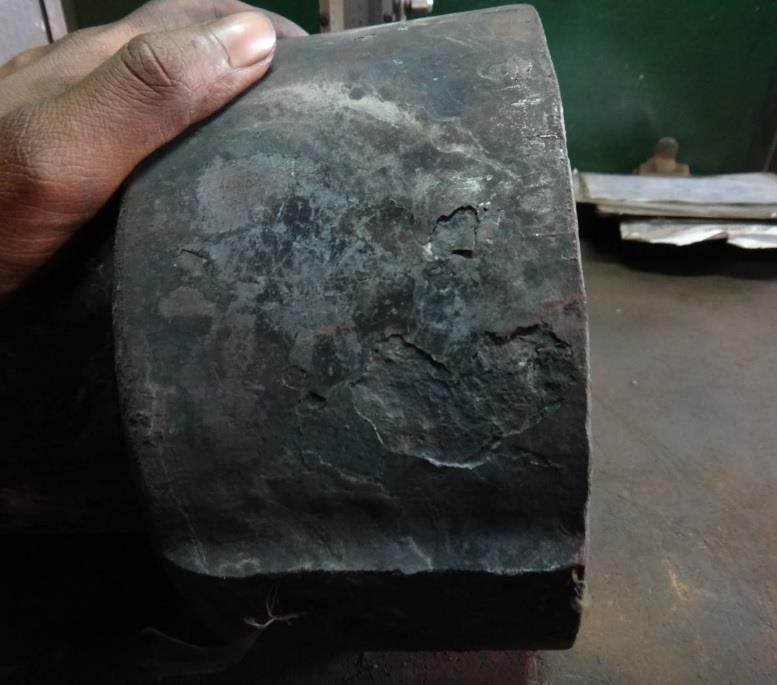
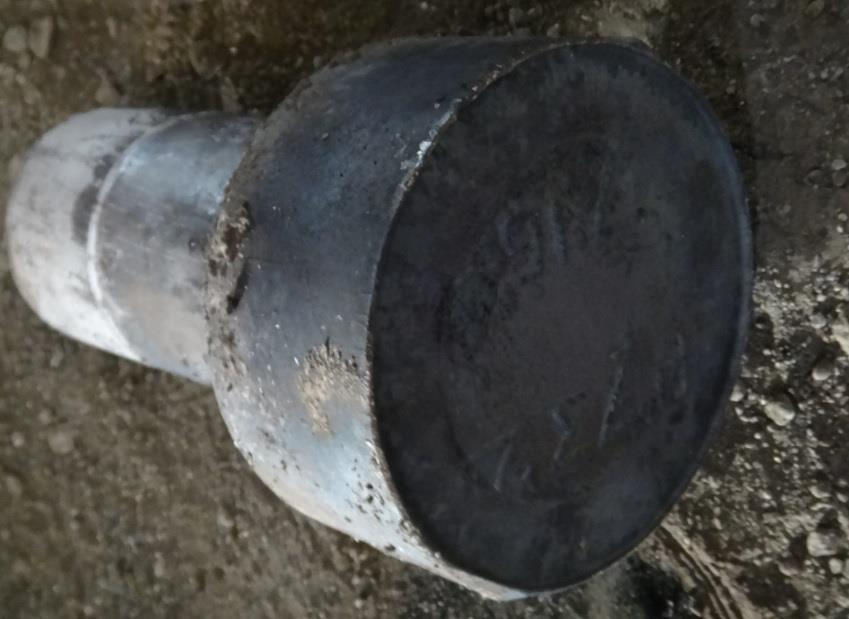
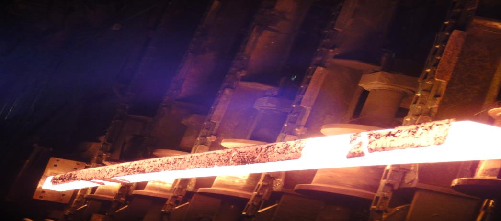
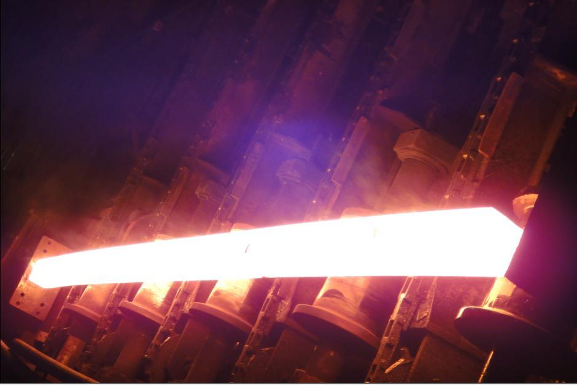
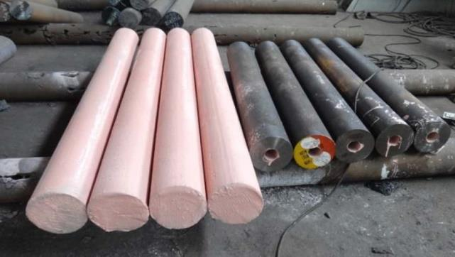

Hot Rolling Cost Reduction: Preventing Rejections & Reducing Fuel Consumption
By the use of protective coatings — a comprehensive technical paper with industrial case studies.
Technical Paper
S.P. Shenoy
18 min read
Hot Rolling & Heat Treatment
Abstract
Protective coatings play a major role in increasing productivity and reducing costs in metal forming processes like hot rolling and heat treatment. Most of these coatings are pioneered in India by an experienced metallurgist from the Indian Institute of Technology. This technical paper presents details and successful case studies of three such protective coatings.
1. Oxidation and decarburisation at high temperatures are caused during heating of billets or ingots for hot rolling and during heat treatment of rolled products. Scaling leads to enormous losses by way of rejections, reduced yield and increase in expensive, time-consuming operations like acid pickling and grinding. Billets are often subjected to excessive heat in furnaces due to unplanned downtime of the rolling mill. In such cases, high oxidation and resultant decarburisation may lead to rejection of an entire heat. The need to control decarburisation and scaling is gaining much importance, especially in the case of expensive grades of steel and critical hot rolled products like rail steel and spring steel. Protective anti-scale coatings and decarburisation control coatings can be used to substantially reduce oxidation and control decarburisation during billet re-heating for hot rolling and heat treatment of rolled products. Recent developments in these coatings have made the coating technique viable for most grades of steel.
2. Production downtime due to furnace maintenance and increased fuel consumption are caused due to wear of refractory bricks. Common causes of furnace downtime are thermal shock cracks, corrosive action of flame and gases on refractory, and carbon deposits on burner blocks. Protective coatings for refractory bricks are developed to withstand temperatures up to 1600°C. Being slightly plastic in nature at temperatures above 200°C, these protective coatings prevent thermal shock cracking of refractory bricks. Due to increased emissivity by the refractory coating and reduced thermal conductivity of the refractory lining, heat is retained in the furnace for longer duration. As a result, when the furnace is switched off in the evening and switched on next morning, the time and fuel required to achieve a temperature of 1250°C are considerably reduced. Furnace outer shell temperature is also reduced.
Key takeaway: These techniques can be easily adopted by all rolling mills, large or small, to achieve substantial cost savings and increased yield.
Protective Coating 1: Preventing Scaling and Controlling Decarburisation
Introduction
In hot rolling and hot forging of steels and alloy steels, the major factor accounting for reduced yield is 'burning loss' or 'scale loss' or 'mill scale' caused due to oxidation. Oxidation and decarburization of steel take place when billets or ingots are heated in a billet re-heating furnace, in the presence of air or products of combustion.
Apart from burning loss of between 1.5% up to 4%, oxidation leads to numerous other problems like scale pit marks, bad quality surface finish, rejections, and increased expensive operations like grinding and acid pickling.
This article introduces a practical technique pioneered by an experienced Metallurgist from the Indian Institute of Technology (I.I.T.). The technique enables any kind of steel to be heated by substantially minimizing the problem of oxidation.
Understanding Burning Loss due to Oxidation
For the purpose of hot rolling, when billets or ingots are heated in an open furnace in the presence of air or products of combustion, the surface phenomena of oxidation takes place. Oxidation causes immediate corrosion of steel at high temperature and creates a layer of metal-oxide, or mill scale, on the surface of the billets or ingots.
Decarburisation is a simultaneous reaction that takes place along with oxidation. However, this decarburization is limited to certain grades of steel only.
Oxidation Reactions
Oxidation of steel is caused by oxygen, carbon dioxide and/or water-vapour. The general reactions are:
O2 + 2 Fe ⇌ 2 FeO
O2 + 4 FeO ⇌ 2 Fe2O3
CO2 + Fe ⇌ CO + FeO
CO2 + 3 FeO ⇌ Fe3O4 + CO
Oxidation of steel may range from a tight, adherent straw-coloured film that forms at a temperature of about 180°C to a loose, blue-black oxide scale that forms at temperature above about 450°C with resultant loss of metal or reduced yield.
Harmful Effects of Oxidation
Oxidation leads to loss of dimensions and material as extra material allowance needs to be kept for scaling. Often, surface quality is deteriorated due to scale-pitting. This is especially true in the case of Nickel bearing grades of steel.
Throughout the industry, this burning loss or scale loss is simply treated as wastage and not many practical solutions are available to stop or reduce this wastage. Problems like thick adherent scaling or scale pit marks or decarburization are dealt by manually grinding off the scale or decarburized layer after the hot forging or hot rolling process.
Preventing or Reducing Burning Loss due to Oxidation
Prevention or substantial reduction of oxidation is not only better than cure, it is profitable too. However, most of the available solutions pose a number of practical difficulties. Capital-intensive special furnaces and availability of human resource for using these high-end furnaces is a major issue. Many small hot rolling organizations cannot afford these solutions — yet they are under mounting pressure to increase yield and reduce costs.
Use of protective anti-scale coating has proven to be a logical solution to the problem of scaling and decarburization in open die hot forging and hot rolling.
Characteristics of Protective Coating and Its Use
Use of protective coating has been found beneficial and cost-effective. An anti-scale coating is applied on billets/ingots to be heated, before charging them into the furnace. This anti-scale protective coating acts as a barrier between oxygen and metal. Care is taken to apply a uniform, impervious layer of coating on the billet to be heated. Coating ensures substantial reduction of oxidation, and thereby reduction in burning loss or mill scale.
Anti-scale coating also reduces decarburization on billets during hot rolling operations. Heat transfer from heating media to metal is not affected due to anti-scale protective coating.

Coated stainless steel ingot before being charged into the furnace.

Coated billets before being charged into the billet re-heating furnace. Coating may be applied by brushing, spraying or dipping.
No reaction with steel surface, no release of toxic fumes during use or hot forging or storage, non-hazardous and economical implementation are other required characteristics of the coating.
Industrial Case Studies and Success Stories
Due to reduction in oxidation by the use of protective anti-scale coating during hot rolling, the scale thickness is considerably reduced. The following photographs show mill scale generated on billets during re-heating for hot rolling with and without using protective anti-scale coating:

With coating: Thin, loose scale is observed on billets when protective coating is used. White layer of coating residue indicates efficacy of coating.

Without coating: Thick adherent scale is observed on billets when coating is not used.
Scale Thickness Measurement
Thickness of mill scale fallen off both coated and not coated billets is measured using a digital vernier calliper. As shown in the image, scale of much lower thickness of 0.717 mm is generated on billets that were protected using anti-scale coating. In comparison, billets that were not protected and were charged in the same batch of heating have shown thicker and more adherent scale of 1.667 mm.

Scale thickness comparison measured using digital vernier calliper. Coated billets show 0.717 mm scale vs 1.667 mm on uncoated billets.
Results
Total reduction in scale0.95 mm
Percentage reduction in mill scale loss56.98%
On average, approximately 70% reduction in mill scale is achieved by the use of anti-scale protective coating in open die hot forging and hot rolling of stainless steel.
Case Study: Mild-Steel Billets — Single and Double Coating
Another report of a number of mild-steel billets hot rolled without coating in comparison with hot rolling similar billets with single coating and double coating of anti-scale protection:
Sr. No
Billet Wt. Before (kg)
Billet Wt. After Heating (kg)
Scale Difference (kg)
Coating Type
1
47.720
47.330
0.390
With Coating
2
47.010
46.660
0.350
With Coating
3
46.510
46.110
0.400
With Coating
Total (coated, 3 billets)
140.100
1.140
With Coating
4
47.720
46.900
0.820
Without Coating
5
46.930
46.260
0.670
Without Coating
6
46.450
45.800
0.650
Without Coating
Total (uncoated, 3 billets)
138.960
2.140
Without Coating
Results
Scale loss (uncoated billets)2.140 kg
Scale loss (double-coated billets)1.140 kg
Percentage reduction in mill scale loss: 47.00%
Visual Comparison: Coated vs. Not Coated Billets
Problem
Solution
Very adherent scale on Nickel steel causes pit-marks and rejections of forgings.
Use ESPON anti-scale protective coating on billets. Substantially reduce scaling. Reduce rejections. Increase yield.
Uncoated
ESPON coated
Uncoated
ESPON coated

Uncoated

ESPON coated
Uncoated
ESPON coated
Other Benefits of Protective Anti-Scale Coatings
1. Reduction in Peeling and Acid Pickling Time
Operations like grinding, acid pickling, etc. do not add value, are expensive and time consuming procedures. These operations are necessary to remove adherent scaling from the hot rolled billets. Time required for operations like shot blasting, grinding, and acid pickling can be substantially reduced if protective anti-scale coating is applied on components before heat treatment. Aesthetic appeal of components is automatically enhanced as scaling is either prevented or reduced.
2. Reduced Decarburization
Certain grades like spring steels, ball bearing steel and rail steel are susceptible to decarburisation. During hot rolling of these special grades, decarburization needs to be consistently maintained to the required specification. However, due to unforeseen conditions like mill breakdown and unplanned downtime, billets remain in the furnace for longer time than usual.
Use of protective coatings on billets before charging them into the re-heating furnace enables the decarburization level to be maintained consistently. This enables the hot rolling mill to guarantee their customers that decarburization level will always be less than the upper control limit.
Reduced decarburization on automobile leaf springs leads to increased fatigue strength and greater reliability. Leaf springs heated after applying protective coating show substantially reduced decarburization and scaling.
3. Preventing Cracking During Hot Rolling and Hot Forging
Micro crack formation is a common occurrence during casting of billets. 20MnCr5 and a range of such sensitive grades of steel are susceptible to cracks. There are different types of surface defects, with many of them having to do with the poor quality of steel during continuous casting.
Minor cracks formed during casting of billets are further intensified during hot rolling and lead to major cracking of hot rolled products. Similarly, micro cracks formed during hot forging propagate further during heat treatment.
ESPON protective coatings are used to prevent cracking of hot rolled and hot forged products. The coating prevents intensifying of micro cracks formed during preliminary stages. Hence, billets must be protected with coating before re-heating for hot rolling.
4. Improving Surface Finish and Preventing Billet Welding
During hot rolling of special grades of steel like Nickel (Ni) and 416 Stainless Steel containing high sulphur content, mill scale formation is greatly increased. Surface finish of hot rolled product may be compromised due to scale pits and rolled-in scale.
Protecting the billets with ESPON anti-scale protective coating before charging them into the re-heating furnace ensures remarkable reduction in oxidation and mill scale. Reduction of scale also has a positive effect on roll life as adherent scale is known to cause serrations and compromise roll life.
Welding of billets during hot rolling and hot forging can also be prevented by applying protective coating on billets before charging them into the furnace.
5. Reduced Furnace Downtime for Scale Removal and Hearth Repair
Scales fallen in the furnace have a tendency to damage the furnace floors or hearth. In many rolling mills, furnace downtime is undergone only to remove scale from furnaces and to repair the hearth. Substantial reduction in scale will automatically reduce costs involved in disposal of scale. Furnace downtime is reduced with an overall positive impact on productivity.

Not coated: Billet on conveyor, discharged from furnace and passed through water de-scaler. Thick, adherent scale was not effectively removed by water de-scaling.

Coated: Anti-scale coated billet on conveyor, discharged from furnace and passed through water de-scaler. Minimum, loose scale was formed that has completely fallen off during water de-scaling.
6. Improving Surface Finish of Seamless Tubes (OD and ID)
In the manufacture of seamless tubes, machined hollow ingots are used in many organisations. It becomes a necessity to protect the surface by protective coating when the ingot is reheated. This ensures better surface finish of the seamless pipe. If scaling occurs in the internal diameter, it is almost impossible to remove it. Hence, wherever practical, ESPON anti-scale coatings are used to protect the internal diameter of the seamless tubes.

Billets protected with anti-scale coating before heating for seamless tube making by mandrel-piercing process (protecting the OD). On the right: seamless tubes with coating in ID to protect from scaling during heat treatment.
Protective Coating 2: Refractory Coatings for Furnace Operations
Hot rolling involves plastic deformation of heated metals and alloys into flat products (slabs, plates) or long products (wire rods, angles, channels, I sections, TMT bars, etc.). In this important metal forming operation, refractory and fuel for the reheating furnace are the major costs. Any process or technique to reduce these costs will automatically improve the profitability of the rolling mill.
Problems Encountered with Refractories
Thermal shock cracking: Thermal shock is unavoidable in furnace operation. Due to thermal shock, cracks are initiated in the refractory lining. Energy leaks through these cracks — this loss may be as high as 33% of the total energy consumption.
Low emissivity: Refractory lining has a low emissivity of 0.2 and hence hampers furnace efficiency. Improving this value to 0.5 or more leads to fuel saving.
Corrosive action: Furnace oil contains sulphur dioxide and vanadium pentoxide. These compounds corrode the refractory lining.
Vicious sand blasting effect: The flame impinging on the refractory lining has a vicious sand blasting effect.
Carbon deposit on burner blocks: More pronounced when the fuel used is furnace oil. Unburned carbon deposits on the burner blocks, and over time, sufficient carbon build-up impairs flame geometry and lowers heating efficiency.
Use of Protective Refractory Coating and Its Results
To overcome these problems, the entire refractory lining of the reheating furnace is coated with a special zircon based coating, ESPON-RCP. The coating can withstand heat of up to 1600°C.
A hot rolling mill producing 40,000 tons per annum of TMT bars has reported the following results:
Refractory Lining Life
Without coating12 months
With ESPON-RCP coat21 months
Fuel Consumption
Without coating40 litres/ton
With ESPON-RCP coat38 litres/ton
Annual saving80,000 litres
Value of annual saving₹16,00,000
Cost of refractory coating₹70,000
Net annual saving: ₹15,30,000
Reduction in time required for achieving hot rolling temperature of 1250°C: Use of protective refractory coating enabled achieving the required temperature much faster. In best cases, approximately 45 minutes to 1 hour of time was saved — hence substantial fuel saving is achieved and hot rolling production can commence faster.
Increased uniformity of heat throughout furnace chamber due to heat retention and better heat emissivity by the use of protective refractory coating.
Reduced furnace outer shell temperature by 10°C to 20°C: All gaps and cracks in refractory lining are sealed off during application of refractory coating. This prevents energy leaks, thereby restricting heat transfer to the furnace outer shell.
Comparison: Before and After Refractory Coating
Fig. 1: Condition of the refractory lining before application of ESPON-RCP coating.
Fig. 2: Condition of burner blocks before coating — carbon deposits and erosion visible.
Fig. 3: Refractory lining after application of ESPON-RCP protective coating — cracks sealed, uniform surface.
Fig. 4: Burner blocks after coating — clean, protected surface with restored flame geometry.
Summary
1.70% average reduction in burning loss or mill scale loss and increased yield in hot rolling and hot forging is possible by the use of protective anti-scale coatings. Protecting billets by applying anti-scale coating on them ensures a number of additional benefits like elimination or reduction of operations like grinding, acid pickling, etc., reduced decarburization, prevention of billet welding in furnace, and improved surface finish.
2.Increase in refractory lining life, reduction in fuel consumption and reduction in furnace maintenance downtime are achieved by the use of refractory protective coatings.
A graduate of IIT Bombay with an M.Tech in Metallurgical Engineering and over four decades in applied metallurgy and surface engineering. He personally oversees product development, quality, and authors technical articles published on this site.
Need a Product Trial?
Contact our team to discuss how ESPON protective coatings can reduce costs and increase yield at your facility.